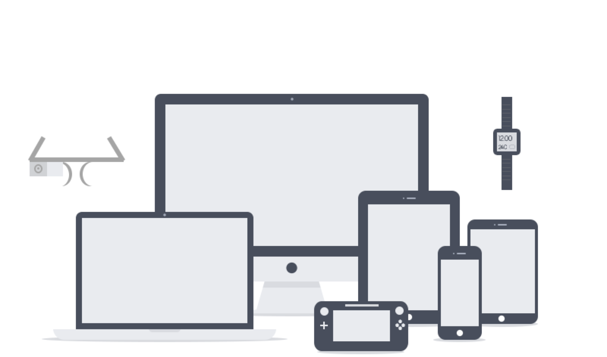

<link rel="stylesheet" href="styles.css"> # Class 1 Programming Interactivity ---- Harbour Space --- Hi üëã My name is Pála (Paula) Im your teacher --- ### Agenda <div style="text-align: left;"> 01/ About me 02/ Programming Interactivity 03/ History of the web 04/ Future of interactivity 05/ This week 06/ Excercise </div> --- ## 01/ About me --- I¬¥m from Iceland üáÆüá∏ Note: Im from Iceland. Iceland is the small island there in the midle of the atlantic ocean. </br></br> We are in Europe but technically we are on both the North America and Europe Techtonic plates. </br></br> Which is also the reason why we have a lot of volcanos --- I live in downtown Reykjav√≠k <img src="attachment/reykjavik.avif" style="max-height: 400px; width: 600px;"/> with my partner who is from Estonia üá™üá™ and our cat Moli üêà Note: I have also lived partly in Estonia, and Czech Republic. --- I go to my office most days and I enjoy biking to work! --- <section data-background-color="black" style="color: white;"> I work as a Software Developer at Gangverk <div style="display: grid; grid-template-columns: 1fr 1fr;"> <img src="attachment/gangverk_small_logo.png" style="height: 100px; display: block; margin-top: auto;"/> <img src="attachment/palaogn.jpg" style="height: 300px; display: block; margin-left: auto;"/> </div> </section> --- <section data-background-color="black" style="color: white;"> <img src="attachment/gangverk_logo.png" style="display: inline-block;"/> "Digital product agency that specializes in driving digital transformation" <img src="attachment/gangverk_small_logo.png" style="height: 100px; display: block; margin-top: auto"/> Note: We work as consultant for companies and help them trough their digital journey. </br> </br> We have software developers, designers, product specialists, and delivery leads. </br> </br> And we have backend and frontend specialises as well as data engineers. </section> --- <section data-background-video="https://videos.ctfassets.net/pbd11ft2v8bu/0KSkRS7hr9sf0q0HmnVxb/add0d0de56f673986da758a5127acfb6/Gangverk_Showreel_v4_Mobile.webm" data-background-video-loop data-background-video-muted> Note: this is examples of some of the work we have done for some of our customers. --- ### Our values <div style="text-align: left;"> #### Be human People are the priority </br> #### Trust Believe in good outcomes and nature </br> #### Relentless Strive for the best possible outcome </br> #### Stay foolish Have fun, learn more, enjoy life </br> </div> --- --- Now I want to know ## Who are you? ü´µ Your name? What are you studying? Where are you from? What is your favorite thing to do in Barcelona? --- ## 02/ Programming Interactivity --- ### Defining Interactivity <div style="text-align: left;"> #### Google Interactivity is the communication process that takes place between humans and computer software. </br> #### Techopedia The ability of a computer to respond to a user's input. </div> Note: Programming Interactivity is a really broad term. In this course we will be focusing on Programming Interactivity on the web. --- ### The course Programming Interactivity on the web - HTML - CSS - JavaScript - To apply interactive design Note: We are going to look at what options there are for interacting with the web. And how to impliment interactions. --- ### Purpose of the study - You can build what you want. Marketing websites and products. - You will learn foundations of programming, opening up a new world. - It will help communicate with developers. Or even better, become one - To understand the possibilities and limitations of the web. - Train your maker mentality. --- ### High-level schedule - 1 week: HTML - CSS styles - 2 week: Javascript - DOM Manipulation - 3 week: Drawing Canvas - Final Class Project --- ### Grades - 20% Everyday Class projects - 20% End of week project - 40% Final Project --- ### Final Project Will be one project that combines everything we are learning Is a landing page, you can decide what it will exactly be I will give more info on it farther into the class --- ### Lecture setup <div style="text-align: left;"> Start at 9:00 (Be on time) 2x 10 min breaks Ends at 12:20 1 hour teacher availability (contact me on discord or talk to me to book) You are expected to show up Note: Each course start at 9. As school rules state if you are located in Barcelona you need to show up in class, otherwise its marked as an absence. </div> --- ### Communications <div style="text-align: left;"> ***Google Classroom*** - Course Material ***Discord*** - Quick discussions ***Zoom*** for calls </div> --- ## 03/ History of the web --- How the Web Evolved to Becoma an Interactive Prayground Note: --- ### The first webpage 1991 Note: This is the first webpage ever built. WorldWideWeb was the first web browser and editor. It was dicontinued in 1994. When it was written, it was the only web browser that existed as well as the first HTML editor. --- ### Mosaic Browser 1993 Note: The mosaic browser, later Netscape Navigator was released in 1993. It was a graphic browser, this was the first web brwser aiming to bring multimedia content to non-technical users. And therefore included images and text on the same page, unlike previous browser design. --- ### Internet Explorer 1995 Note: This is the Internet Explorer that came out in 1995. But it kind of took over the market after that. --- ### CSS released 1996 <img src="attachment/c1/css.jpg" /> Note: Before CSS there was just HTML to style pages. But they did have these HTML style tags. --- ## Who in here is older then Google? Note: Started 1996 but first released 1998. </br></br> Im kind of suprised how the layout is kind of the same today. --- The web was only viewed by desktop computers Note: The web was only viewed by desktop computers --- ### Iphone announcement 2007 <img src="attachment/c1/iphone.png" /> --- ### 320 x 420 --- ### RWD - Responsive Web design One website - all screen sizes  Note: Ethan Marcotte coined the term responsive web design. And defined it to mean fluid grid/ flexible images/ media queries. In a articel in may 2010 in A List Apart. Thats already 3 years after the launch of iphone. --- ### Social media --- ### Facebook 2004 --- ### Youtube 2005 --- ### Twitter / X 2006 <img src="attachment/c1/twitter-2006.png" /> --- ### Instagram 2010 --- ### Snapchat 2011 --- ### Musical.ly / TikTok 2016 --- Note: These mainstream social media have made a big impact of interactivity on the web. Facebook, Twitter and Instagram I think is safe to say, started the infinite scrolling trend. At one point you would finish, but at some point they made it infinie. </br></br> Then Tiktok came with the short intension span tapping. (that is making the world less patient, or more quick). </br></br> These have quite a big impact on the interaction on the web today. As these patterns are used all over the internet now. People get used to them and start to learn the pattern. Same with the pattern of navigation on aa page. (Top bar, burger menu, you will most of the time go up) --- ### Facebook like button introduced in 2009 <img src="attachment/c1/Facebook_Like_btn.png" /> Note: Followed with comments in 2010. </br></br> There was talks about a "dislike" button </br></br> Then followed by reactions in 2016, with emotions including "Love", "Haha", "Wow", "Sad", or "Angry" --- ### Facebook reaction buttons introduced in 2016 --- ## 04/ Future of interactivity Note: Well you tell me, I don't know. Does anyone actually know. --- The most dangerous phrase in the language is, ***We've always done it this way*** #### - Grace Hopper (1906-1992) Note: Grace Hopper was an american computer scientist and mathematician. </br></br> She was a pioneer of computer programming --- That's why I have a clock on my wall that runs counter-clockwise. #### - Grace Hopper Note: Well, a counter clocwise clock runs the same way as a normal clock. </br></br> I actually bought myself a anti clockwise clock as a reminder of this --- ### Grace Hopper Believed that programming should be simplified with an English-based computer programming language </br> </br> Had the idea and wrote the first ***compiler*** Note: Hopper believed that programming should be simplified with an English-based computer programming language. She proposed the idea of writing programs in words, but she was told her idea would not work. </br></br> Compiler is something that translated a human like language, or code that humans understand into machine code that machines can understand. </br></br> Cobol came out 1959. </br></br> This has spiraled into tech today, today we can say Hey Siri --- This mindset is important today! How can we make Interactions simple Note: Technology has made so many things easier for us. But it is getting harder every day. Its easy to create a complex software, its hard to create a easy one. There is a big value in keeping it simple. Easy does not mean, less advanced. </br></br> Good UX, simplify progress, the simplify mindset --- Note: The KISS principle. The term was first used in the US Navy and is thought to have been coined by Kelly Johnson, who was the lead engineer at the Lockheed Skunk Works --- #### Grace Hopper Also found the world first computer ***bug*** which was a literal insect, it was a moth <img src="attachment/c1/computer-bug.jpg" height="400px" /> Note: The team at Harvard University in Cambridge, found that their computer, the Mark II was delivering consistent errors. </br></br> When they opnened the computer's hardware, they found a moth. The trapped insect had disrupted the electronics of the computer. </br></br> Debug --- ### What is the future of interacting with the web today? --- ### Computer Keyboard Most known is QWERTY keyboard layout, same as the typewriter Note: If we look at the computer, we mainly interact with it by the computer keyboard and the mouse. We have physical mouse and the touchpad. </br></br> What is interesting about computer keyboard is that the most common layout the QWERTY keyboard layout. Was initially developed for typewriters. Commonly used letters were spreaded out to reduce the amount of times the printing hammers got jammed. </br></br> But its interetsting, why are we using the same layout still today? is this the best layout to use. Or have we just always done it this way. --- ### Airplain keyboard Note: This is a keyboard that pilots need to use in plains, the keys are actually alphabetical. This is the same layout we see fx on a television. --- ### Smartphone keyboards Note: Then there is the smartphone keyboards. That are just virtual keyboards, also mainly of the QWERTY standart. --- ### Keypad phone Note: Then previously we had the keypad phones. I have to admit that I miss that keyboard, I liked that more then the current smartphone keyboard. You can type without looking at the keyboard. --- Quadstick <section data-background-iframe="https://www.quadstick.com/" data-background-interactive> Note: This is a company that specializes in accessible remotes for people with disibilities that perhaps can't use a normal keyboard or a mouse. This remotes can all be controlled from your face. They include a joystick, they can be pressed with tongue, they have blowing tubes, chin button and more. </br></br> This is interesting what is the future of interacting with the web. Will I still be hurting my shoulders or hand by using a keyboard. Or will I be able to use other methods, such as eyes, mouth, toes. --- Interactivity is a broad term and I hope we can learn more about it together! Note: --- #### So that you can be the pioneers of the future of interactivity Lets learn how to program it and what material do we have to work with Note: By material in this concept I mean HTML, CSS, browsers, key inputs, keyboard, mouse, controls </br></br> We can use that to change the flow of the web, we can change how things look, make things move, create new hardware for interations. Possibilities are endless --- ## 05/ This week - Today: What is interactivity - Tuesday: HTML - Wednesday: CSS - Thursday: More CSS, CSS Grid and Responsive Web Design - Friday: Practical class for Weekly project 1 Everyday we will have a Class project in the end of the class --- ## 06/ Excercise